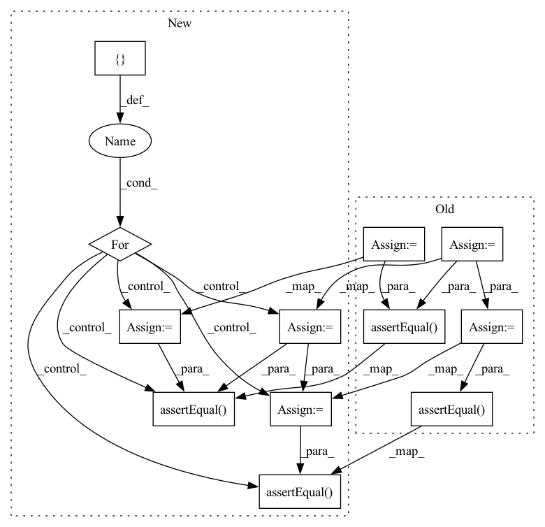

Pattern ID :6312

Before Change
obs(weights)
qparams = obs.calculate_qparams()
// Quantize the weights to 8bits
qweight = torch.quantize_per_channel(weights, qparams[0], qparams[1], axis=0, dtype=torch.quint8)
qemb = nnq.Embedding(num_embeddings=num_embeddings, embedding_dim=embedding_dim)
qemb.set_weight(qweight)
qemb(indices)
// Ensure the module has the correct weights
self.assertEqual(qweight, qemb.weight())
w_packed = qemb._packed_params._packed_weight
module_out = qemb(indices)
// Call the qembedding operator directly
ref = torch.ops.quantized.embedding_byte(w_packed, indices, pruned_weights=False)
self.assertEqual(module_out, ref)
self.checkEmbeddingSerialization(qemb, num_embeddings, embedding_dim, indices, None, set_qconfig=False, is_emb_bag=False)
@given(
After Change
obs(weights)
qparams = obs.calculate_qparams()
dtypes = [torch.quint4x2, torch.quint8]
embedding_funcs = [torch.ops.quantized.embedding_4bit, torch.ops.quantized.embedding_byte]
for dtype, embedding_func in zip(dtypes, embedding_funcs):
// Quantize the weights
qweight = torch.quantize_per_channel(weights, qparams[0], qparams[1], axis=0, dtype=dtype)
qemb = nnq.Embedding(num_embeddings=num_embeddings, embedding_dim=embedding_dim, dtype=dtype)
qemb.set_weight(qweight)
qemb(indices)
// Ensure the module has the correct weights
self.assertEqual(qweight, qemb.weight())
w_packed = qemb._packed_params._packed_weight
module_out = qemb(indices)
// Call the bit qembedding operator directly
ref = embedding_func(w_packed, indices, pruned_weights=False)
self.assertEqual(module_out, ref)
self.checkEmbeddingSerialization(qemb, num_embeddings, embedding_dim, indices, None, set_qconfig=False,
is_emb_bag=False, dtype=dtype)
@given(
In pattern: SUPERPATTERN
Frequency: 3
Non-data size: 12
Instances
Fragment ID: 21897359
Project Name: pytorch/pytorch
Commit Name: 9f512e129b48a84ca742f64d1a4c742361b3300c
Time: 2021-12-18
Author: dzdang@fb.com
File Name: test/quantization/core/test_quantized_module.py
M Class Name: TestStaticQuantizedModule
N Class Name: TestStaticQuantizedModule
M Method Name: test_embedding_api(4)
N Method Name: test_embedding_api(4)
M Parent Class: QuantizationTestCase
N Parent Class: QuantizationTestCase
M File Name: test/quantization/core/test_quantized_module.py
N File Name: test/quantization/core/test_quantized_module.py
M Start Line: 816
M End Line: 837
N Start Line: 816
N End Line: 844
'>
Before Change
qparams = obs.calculate_qparams()
// Quantize the weights to 8bits
qweight = torch.quantize_per_channel(weights, qparams[0], qparams[1], axis=0, dtype=torch.quint8)
qemb = nnq.Embedding(num_embeddings=num_embeddings, embedding_dim=embedding_dim)
qemb.set_weight(qweight)
qemb(indices)
// Ensure the module has the correct weights
self.assertEqual(qweight, qemb.weight())
w_packed = qemb._packed_params._packed_weight
module_out = qemb(indices)
// Call the qembedding operator directly
ref = torch.ops.quantized.embedding_byte(w_packed, indices, pruned_weights=False)
self.assertEqual(module_out, ref)
self.checkEmbeddingSerialization(qemb, num_embeddings, embedding_dim, indices, None, set_qconfig=False, is_emb_bag=False)
@given(
After Change
obs(weights)
qparams = obs.calculate_qparams()
dtypes = [torch.quint4x2, torch.quint8]
embedding_funcs = [torch.ops.quantized.embedding_4bit, torch.ops.quantized.embedding_byte]
for dtype, embedding_func in zip(dtypes, embedding_funcs):
// Quantize the weights
qweight = torch.quantize_per_channel(weights, qparams[0], qparams[1], axis=0, dtype=dtype)
qemb = nnq.Embedding(num_embeddings=num_embeddings, embedding_dim=embedding_dim, dtype=dtype)
qemb.set_weight(qweight)
qemb(indices)
// Ensure the module has the correct weights
self.assertEqual(qweight, qemb.weight())
w_packed = qemb._packed_params._packed_weight
module_out = qemb(indices)
// Call the bit qembedding operator directly
ref = embedding_func(w_packed, indices, pruned_weights=False)
self.assertEqual(module_out, ref)
self.checkEmbeddingSerialization(qemb, num_embeddings, embedding_dim, indices, None, set_qconfig=False,
is_emb_bag=False, dtype=dtype)
@given(
'>
Fragment ID: 21897366
Project Name: pytorch/pytorch
Commit Name: bfdf45cc8950c1f5a5e448217cdfda3591da81d0
Time: 2022-02-04
Author: dzdang@umich.edu
File Name: test/quantization/core/test_quantized_module.py
M Class Name: TestStaticQuantizedModule
N Class Name: TestStaticQuantizedModule
M Method Name: test_embedding_api(4)
N Method Name: test_embedding_api(4)
M Parent Class: QuantizationTestCase
N Parent Class: QuantizationTestCase
M File Name: test/quantization/core/test_quantized_module.py
N File Name: test/quantization/core/test_quantized_module.py
M Start Line: 911
M End Line: 932
N Start Line: 911
N End Line: 939
'>
Before Change
observer = default_observer
quant_min = 0
quant_max = 255
fq_module = FakeQuantize(observer, quant_min, quant_max)
scripted_module = torch.jit.script(fq_module)
X = torch.tensor([-5, -3.5, -2, 0, 3, 5, 7], dtype=torch.float32)
fq_module(X)
scripted_module(X)
self.assertEqual(fq_module.calculate_qparams(),
scripted_module.calculate_qparams())
buf = io.BytesIO()
torch.jit.save(scripted_module, buf)
buf.seek(0)
loaded_module = torch.jit.load(buf)
self.assertEqual(fq_module.calculate_qparams(),
loaded_module.calculate_qparams())
@given(device=st.sampled_from(["cpu", "cuda"] if torch.cuda.is_available() else ["cpu"]),
X=hu.per_channel_tensor(shapes=hu.array_shapes(1, 5,),
After Change
observer = default_observer
quant_min = 0
quant_max = 255
for FakeQuantizeClass in [FakeQuantize, _LearnableFakeQuantize]:
fq_module = FakeQuantizeClass(observer, quant_min, quant_max)
scripted_module = torch.jit.script(fq_module)
X = torch.tensor([-5, -3.5, -2, 0, 3, 5, 7], dtype=torch.float32)
fq_module(X)
scripted_module(X)
self.assertEqual(fq_module.calculate_qparams(), scripted_module.calculate_qparams())
buf = io.BytesIO()
torch.jit.save(scripted_module, buf)
buf.seek(0)
loaded_module = torch.jit.load(buf)
self.assertEqual(fq_module.calculate_qparams(), loaded_module.calculate_qparams())
@given(device=st.sampled_from(["cpu", "cuda"] if torch.cuda.is_available() else ["cpu"]),
X=hu.per_channel_tensor(shapes=hu.array_shapes(1, 5,),
'>
Fragment ID: 21897367
Project Name: pytorch/pytorch
Commit Name: 0c60922fb0614132433779ad45ab8f30783db2ae
Time: 2021-02-03
Author: haichuan@fb.com
File Name: test/quantization/test_workflow_module.py
M Class Name: TestFakeQuantize
N Class Name: TestFakeQuantize
M Method Name: fake_quant_scriptable(1)
N Method Name: fake_quant_scriptable(1)
M Parent Class: TestCase
N Parent Class: TestCase
M File Name: test/quantization/test_workflow_module.py
N File Name: test/quantization/test_workflow_module.py
M Start Line: 1244
M End Line: 1259
N Start Line: 1198
N End Line: 1215